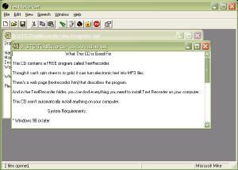
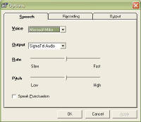

|
|
Download TextRecorder v1.2Register TextRecorder
Introduction
 TextRecorder is also for print-impaired students and the people who help them who cannot afford high-priced access technology. If you have a learning or visual disability, and want to quickly read lots of e-text, TextRecorder costs nothing and will enable the computer to read to you. If you create audio textbooks for print-impaired students, TextRecorder can batch the process.
How It WorksTextRecorder uses the electronic voices of synthesized speech to read aloud. Any voice which supports the Microsoft Speech API 5.1 can be used. It has been primarily designed for recording rather than reading however and can quickly create MP3 files that you can download to your player or listen to directly on the computer.
Features
Registration
 If you don't want to register, you are still free to use the demo version of TextRecorder, on as many computers as you want for as long as you like.
Technical DetailsTextRecorder comes with and depends on the Free Microsoft Speech engine SAPI version 5.1. It also comes with and requires the free LAME MP3 encoder. TextRecorder has been tested with other SAPI 5 compliant speech engines, including L&H, AT&T and Cepstral. If you have SAPI 4 voices on your computer, TextRecorder will simply ignore and not use them. TextRecorder has been tested on Windows 98, Windows 2000 and Windows XP. It is easy to access with JAWS for Window and ZoomText. We see no reason why it would not be just as easy to access with other screen readers, but we currently haven't tested with others.
Installing TextRecorderIf you would like to try our free software, click here to install TextRecorder. TextRecorder requires two additional programs which might or might not be already installed on your system. If you do not already have any speech software installed on your PC, you will need to install the Microsoft Speech API version 5.1, a free text to speech engine from Microsoft with three American English voices. SAPI 5.1 is included on this CD, and if your PC has Windows 9x, ME, NT or 2000, click here to install it. If your PC uses Windows XP, either the Home or Professional version, you can click here to install the correct version for your system. If you want to learn more about Microsoft SAPI, visit their web page at www.microsoft.com/speech If you want to make MP3 recordings, you will also need to install the free LAME MP3 encoder. You can install the LAME executable files on your computer by clicking here. Of course, if Lame is already on your system, there's no need to install it again. You can learn more about LAME by visiting the official LAME web site, lame.sourceforge.net.
|
Visit these Spare Time Gizmos
|

{kind=link}
{kind=link}